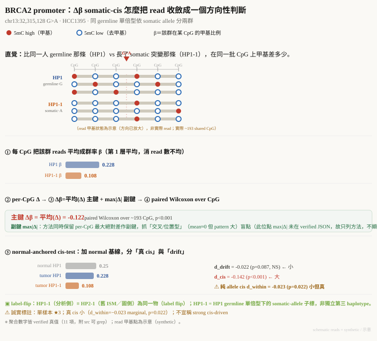
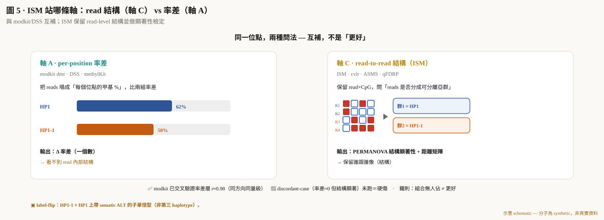
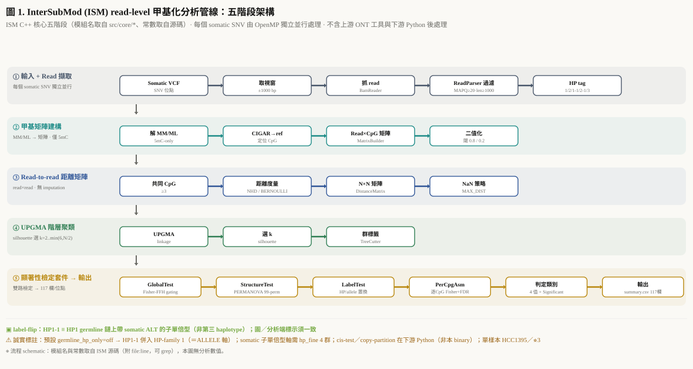
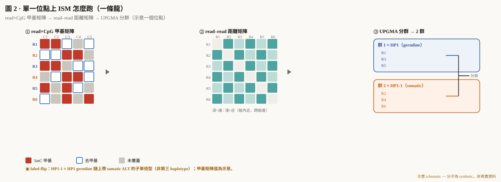
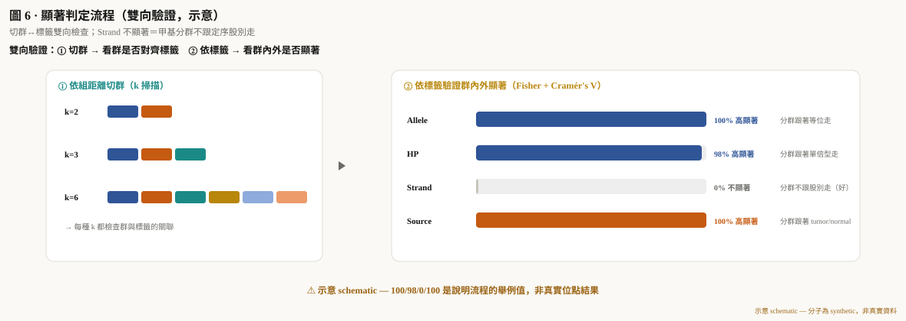

癌症長讀定序：somatic × haplotype × 甲基 關聯分析
工作標題（沿用 pptx S1）：「癌症樣本以長讀定序做 somatic、haplotype、甲基 關聯分析（用於提升 phase tag 結果）」 framing 括號「用於提升 phase tag」屬目標二，現況為 future-work（見 §2）。
這份簡報主張：在癌症長讀資料上，我們建立了 read 層級的甲基結構分析工具（ISM），用它找到真實存在的 somatic-haplotype 甲基化關聯個案（§1），並沿四個研究目標推進——其中一個是主軸（活）、兩個是 future-work、一個是已驗證為負但有方法學價值的負結果（§2）。
四目標一覽（誠實狀態標籤）
| 目標 | 內容 | 狀態 | 一句誠實話 |
|---|---|---|---|
| 一 | 找 ASM 位點 + 建 ISM 工具 | 主軸 · 活 | 工具完成、個案真實，存在性 ⭐4／單樣本 magnitude ⭐3 |
| 二 | 用甲基修正 phasing（救 unphase/HP3） | future-work | T1 救 unphase 模擬 0.885；T2（歸 H3）未證；單樣本 self-reference |
| 三 | 還原 subclone 演化（甲基串接 read） | 已測為負 | T3 同單倍型內亞群解析 NEGATIVE（matched p=0.92） |
| 四 | 區分 TP/FP 提升 F1 | 負結果骨幹 | 死四道（碰壁），但這是論文最防彈的誠實貢獻 |
1 · 證明「突變位點 × haplotype × 甲基差異」共存的個案
BRCA2/ZAR1L 雙向啟動子（chr13:32,315,128, G>A）有一個真實、抗 Bonferroni 的 somatic-haplotype 低甲基化關聯（HP1 vs HP1-1，Δβ=−0.122）—— 一個乾淨、IGV 可視的個案。P

⚠ 誠實地雷修正（取代原 pptx S2 敘述）：原稿寫「ZAR2 蛋白 bind 並 silence BRCA2 → cis-ASM → silencing」。此句有三處須改正：
- 方向矛盾：本位點 ASM 是 低甲基化（Δβ=−0.122），而 canonical TSG 沉默是高甲基化。不可把此個案當「甲基→沉默」的證據（hypo≠hyper）。
- 非乾淨 cis：copy-partition 顯示 ~80% 是 copy 成分（d_copy=−0.11），純 within-somatic cis 只剩邊際 d_within=−0.023（perm p=0.022）。不可宣稱「乾淨 cis-driven」。乾淨 cis 範例請改用 chr17/TBC1D16（d_within=0.142 > HP-axis，perm p=0.001）。
- 外部 claim 標來源：「ZAR2 蛋白 bind/silence BRCA2」是 Misra 2010 的文獻主張（且是 ZAR2 蛋白非 ZAR1L），非本研究數據；座標 chr13:32,315,128 在 hg38 約落 canonical TSS 上游 ~380 bp。
L2 · 個案到底證明了什麼（誠實邊界）
- 證明的：read 層級可偵測到真實、可重現、抗 13-test confound 的 somatic-haplotype 甲基差異；HP-axis 設計上 held-constant CN/ploidy/alignment。
- 沒證明的：① 這是 cis-driven 的甲基沉默（~80% copy）；② 是 TSG silencing（方向是 hypo）；③ 可推廣（單樣本 HCC1395，BRCA2 是手挑 showcase 非 pattern 代表）。
- HP1-1 = HP1 germline 鏈上帶 somatic ALT 的子單倍型（非第三 haplotype）。
2 · 主軸與四目標（保留原框架 + 狀態標籤）
主軸：探討甲基化與 phasing/haplotype 在癌症樣本上的關聯，結合 read 數、LOH、CNV、CN 共同分析。四目標強弱差很多，故每個加上誠實狀態標籤。
目標一 · 找 ASM 位點 + 建 ISM 工具 主軸 · 活
- 建立 InterSubMod 工具與判別流程；定位甲基明顯分群／差異的突變位點並排序、輸出供後續研究使用。
- 已有個案 BRCA2（§1，誠實標 copy-confound）+ 文獻佐證。存在性跨 6 樣本 powered P，單樣本 magnitude ⭐3。
目標二 · 用甲基修正 phasing（救 unphase / HP3） future-work
狀態誠實化：機制是「甲基 = germline-haplotype 層級」→ 分不同 haplotype 強。
- T1（unphase→H1/H2）：held-out 模擬救援 accuracy 0.885（null 0.524）— 但這是「假裝 unphase」的模擬，非真 unphase read 救援。S
- T2（判斷 HP1/HP2 是否 somatic read／歸 H3）：OVERSTATED——只證有真值的 1-1 vs 2-1 可分（0.90），把它外推到實際 H3 未證。
- 全線單樣本 HCC1395 + 單一 longphase-S self-reference pipeline → tier 上限 ⭐2-3。論文角色＝future-work／Discussion。
目標三 · 還原 subclone 與演化（甲基串接 read） 已測為負
⚠ 誠實地雷修正：原稿把「甲基化用於串接未通過的 read」列為可行手段。但 T3（同一 haplotype 內亞群／subclone 解析）已驗證 NEGATIVE（matched within-window p=0.924，亞群甲基≈噪音）。這是機制衰退處，不可列為正向目標 → 改 future-work／明標已測負。
- 可保留的誠實敘述：subclone SNV 串接（非甲基）+ 假想演化樹（§8，標「假想」）仍可作為觀察案例。
目標四 · 區分 TP/FP 提升 F1 負結果骨幹
原稿已誠實標「困難、已碰壁」——很好。建議升級成論文最防彈的誠實負結果（甲基不能 filter somatic 變異，死四道）。
- ① 單樣本 pilot ΔF1=+0.00242（< Cohen ribbon）；② LOSO 證 in-dist +0.02236 是 100% sample-level circularity（held-out −0.00012、5 樣本 mean −0.00004 Wilcoxon p=0.125、HCC1954 transfer −0.377）；③ ablation：丟全部 5 個甲基特徵只掉 +0.00065（甲基是 vestigial）；④ 6 樣本 powered：\|Δβ\| 預測 is_TP AUC=0.505（≈隨機）。
- 校正：原稿「最可行方向為輔助 FN→TP」——Step 5c TP rescue 已測 NEGATIVE（95% lost TP 是 low-AF，甲基是 caller_af 的 proxy）。FN→TP 同樣未成功，建議改「亦未成功／難度大」。
3 · 與現有甲基化軟體的對比（補原 S4 空白）
ISM 與 modkit/DSS 是問不同問題，不是「更好」。主流站「per-position 率差（軸 A）」，ISM 站「read-to-read 距離 + 結構顯著性（軸 C）」——互補。framing
| 軸 | 問題 | 代表工具 | ISM 是否站 |
|---|---|---|---|
| A 率差 | 每個位點兩組甲基率差多少 | modkit dmr · DSS · methylKit | 有（但非主打） |
| C 結構 | reads 是否依單倍型分成結構可分離的亞群 | ISM · cvlr · ASMS · qFDRP | 主站 |
- 已實測交叉驗證：BRCA2 率差 modkit −0.159 vs ISM −0.122（同方向同量級）；解析正確性 Pearson r=0.976/0.993。P
- ISM 可防守新穎＝「read-read 距離 + supervised PERMANOVA 結構顯著性 + normal-anchored somatic cis-test + 5mC/5hmC 分軌 + LOH/CN 耦合」這個組合無單一工具同時佔。
- 誠實硬傷：最能 falsify 的 discordant-case（率差≈0 但 ISM PERMANOVA 顯著）尚未跑；全 panel/cvlr/ASMS 對照未完成。鐵則「組合無人佔 ≠ 更好」。

4 · 研究歷程（沿用 pptx S5，誠實呈現轉折）
L2 · 時間軸（折疊）
| 時間 | 事件 |
|---|---|
| 起點 | 老師討論：研究甲基與 phase 在癌症上的狀況（有論文證明觀察意義） |
| 2025-02-27 | 發現 subclone 個案、甲基關聯、演化樹方法 |
| 2025-05-29 | 設計第一版 MethylSomaticAnalysis |
| 2025-06-25 | IGV 大規模肉眼觀察（避免先入為主） |
| 2025-08-14 | MSA 確認 AF＋甲基微幅提升 paired F1 |
| 2025-09-04 | 提升幅度小 → 轉向尋找 ASM 位點 |
| 2025-11-26 | InterSubMod 完成 |
| 2026-01-21 | 建立兩種分群驗證觀察方式 |
| 2026-03-12 | 轉研究 TO 的 TP/FP；找到 LOH/CNV SEQC2 可觀察 |
| 2026-05-05~11 | 修 longphase-TO tag bug；確認仍微效果、大規模樣本無效 |
| 2026-05-27 | 找到 ASM 個案 ZAR1L/BRCA2，捨棄 TP/FP 判別以發現位點為主 |
措辭軟化：原「ASM 決定性位點」→ 建議「ASM 代表性個案」（BRCA2 是 showcase 非 pattern 代表）。
5 · ISM 方法（取代散落表格 → Fig 1 源碼驗證架構圖）
ISM C++ 核心對每個 somatic SNV 並行跑五階段：①Read 擷取 → ②甲基矩陣 → ③read-read 距離 → ④UPGMA 聚類 → ⑤顯著性檢定 → 輸出 117 欄。

L2 · 方法章必寫的源碼事實（取代 pptx S8 散落表格）
- 5mC-only：C++ 只解析
C+m?（5mC）；5hmCC+h?不取值。「max-collapse／any-mod」在 Python/外部層。 - 預設 HP 軸 = germline-family：
germline_hp_only=off，HP1-1 併入 HP-family 1（ALLELE 軸）；somatic 子單倍型軸需hp_fine4 群。 - PERMANOVA production = 99 置換（非 999），輸出 pseudo-F；GlobalTest 雙門檻 Fisher-FFH p≤0.1 ∧ Cramér's V≥0.1（Cochran 期望<5 歸 0）。
- Δβ 補救：用 tag 把 read 平均甲基化算整體差異（mean 主鍵 + max\|Δ\| 副鍵），補 clustering 看不到的方向性。
- cis-test／copy-partition 在下游 Python，不在 C++ binary。
6 · 甲基關聯分析示意（pptx S7）
以 SNV ±1000 bp 取 read、分正/反股算 read-read 距離、再做分群與「甲基演化樹」示意。
- 正/反股分開算距離（甲基 ramp 與 haplotype 藍橘軸正交）。
- 措辭：「甲基演化樹」是推論示意，非直接證據；標 示意 schematic，避免被讀成已證實的演化。

7 · 顯著判定流程（pptx S9，數字為示意）
示意 schematic 下表 100%/98%/0%/100% 是說明流程的舉例值，非真實位點結果（已與你確認）。SVG 版會打 synthetic 浮水印。
| 標籤軸 | 群內外顯著（示意） | 解讀 |
|---|---|---|
| Allele | 100% 高顯著 示意 | 分群跟著等位走 |
| HP | 98% 高顯著 示意 | 分群跟著單倍型走 |
| Strand | 0% 不顯著 示意 | 分群不跟定序股別走（好現象） |
| Source | 100% 高顯著 示意 | 分群跟著 tumor/normal 走 |
雙向驗證：依標籤驗證群內外顯著 ↔ 依分群（切 2/3/6 群）驗證標籤顯著。

8 · subclone 案例（pptx S10/S11，假想推論）
chr2:18M 區多位點 somatic（ClairS + DeepSomatic 一致），用 SNV 串接 + LOH 推一棵 假想 subclone 演化樹。假想
- 原稿已誠實標「假想樹／合理推論／假想分類」——保持，不可升級成「證實的演化」。
- FP? 標註誠實（高甲基/低甲基分界線觀察）。
- 甲基在此案例是輔助觀察（subclone 解析的甲基訊號本身 T3 為負，§2 目標三）。
附 · 3 顆誠實地雷修正彙整
| # | 原稿（pptx） | 修正 | 依據 |
|---|---|---|---|
| 1 | S2「ZAR2 bind/silence BRCA2 → cis-ASM → silencing」 | hypo≠hyper 不可當沉默證據；~80% copy 非乾淨 cis；外部 claim 標 Misra 2010；座標上游 ~380bp | copy_partition / reviewer Q5 |
| 2 | S3 目標三「甲基化串接 read 做 subclone」 | T3 subclone 解析已 NEGATIVE（matched p=0.92）→ 改 future-work／已測負 | methyl_phasing_assist T3 |
| 3 | S9「100%/98%/0%/100%」未標 | 標「示意 schematic」（舉例值非真值） | 用戶確認 |
| + | S3 目標四「FN→TP 可行」 | 改「亦未成功」（Step 5c rescue NEGATIVE） | methyl_filter_pilot |